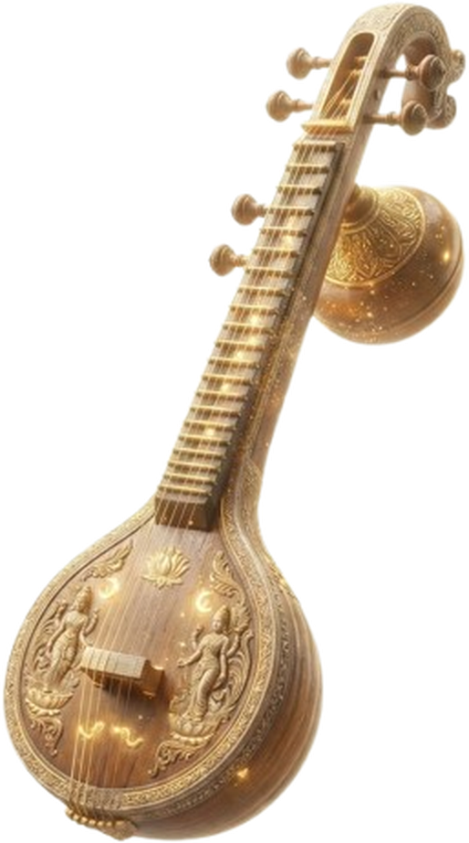
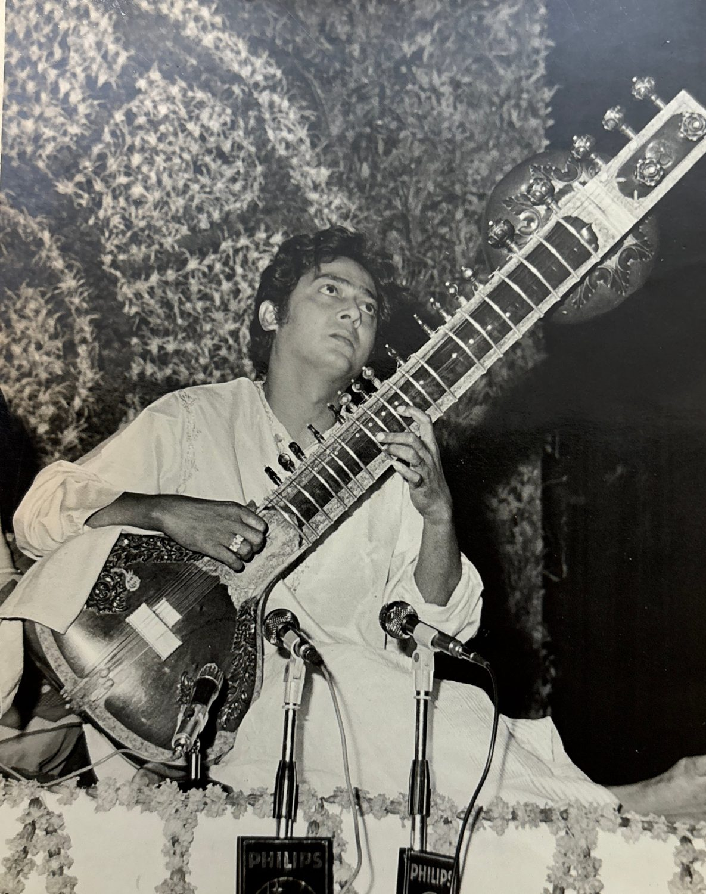
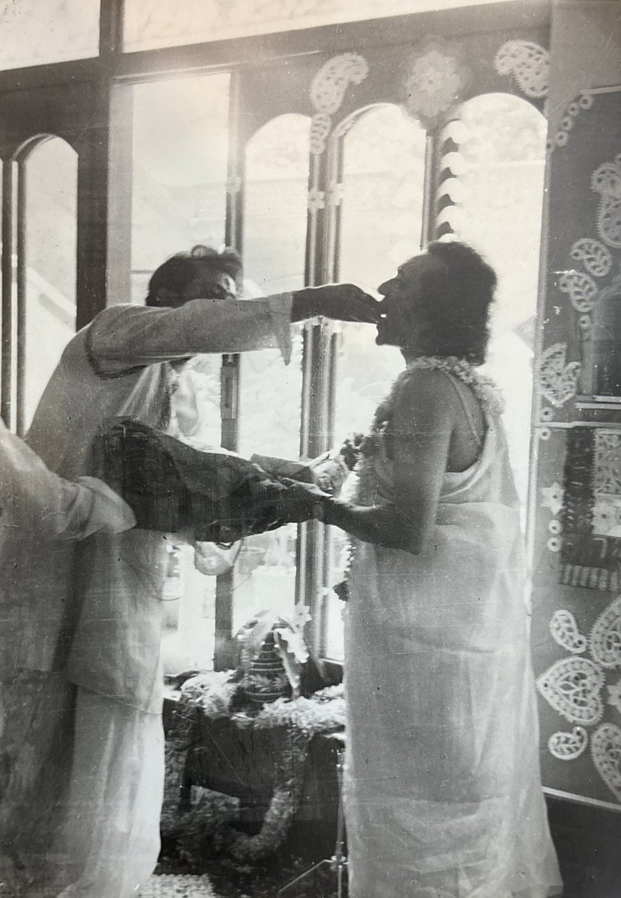
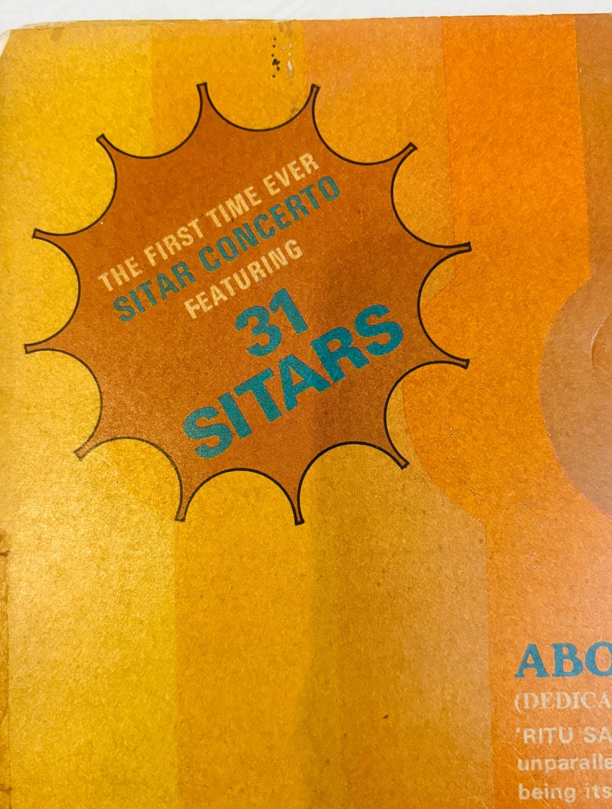
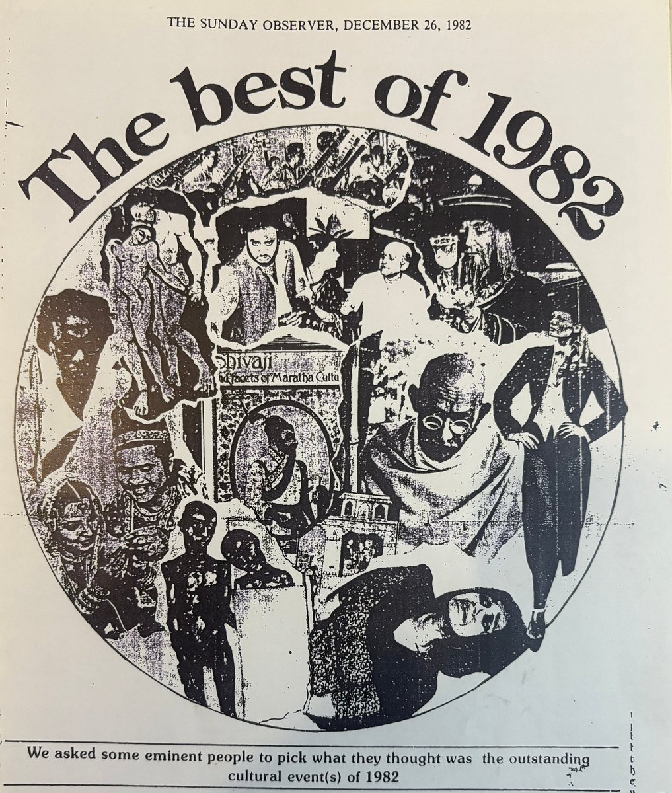
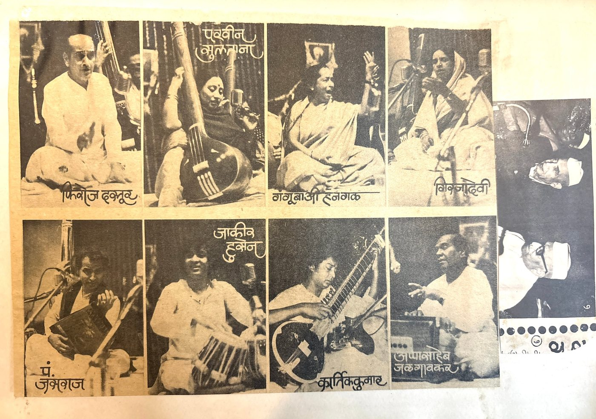
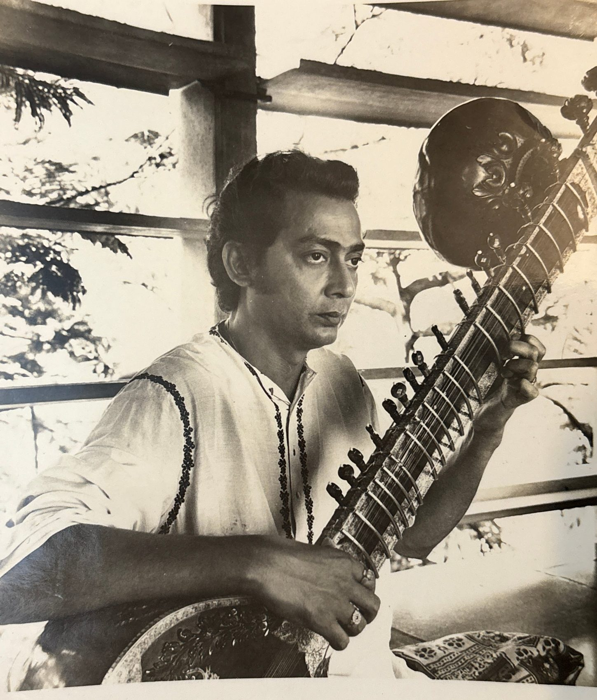

Sitar & SurbaharA fourth-generation sitarist, a senior-most disciple of Ravi Shankar, and the quiet architect of a thirty-one sitar concerto.
Born in Dhaka in 1936, Pandit Kartick Kumar carried the sitar from a family lineage into the concert halls of the world. His first teacher was his father, Mangal Chandra Das; his path later crossed that of Pandit Ravi Shankar, who took him under his wing in 1958.
For nearly four decades he also gave the sitar its voice in Hindi cinema — on countless Lata Mangeshkar songs and for the greatest composers of the age — while raising a son, Niladri Kumar, who would carry the gharana into a fifth generation.
Kartick Kumar